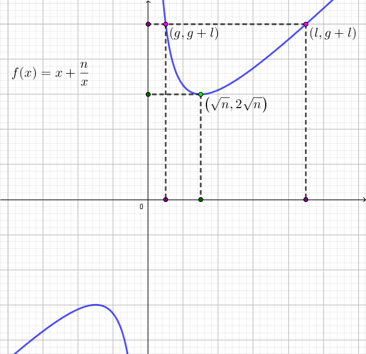

这一天，小 Y、小 D、小 C 正在愉快地玩耍。
小 Y 是个数学家，他一拍脑袋冒出了一个神奇的完全平方数 $n$。
小 D 是个机灵鬼，很快从小 Y 嘴里套出了 $n$ 的值。然后在脑内把 $n$ 写成了 $a \times b$ 的形式。其中 $a, b$ 都是正整数。
小 C 是个八卦狂，他发现小 D 从小 Y 那里获知了神奇的东西，于是死缠烂打追问小 D。最后小 D 说道："我可以告诉你正整数 $g$ 和 $l$ 的值，我保证 $ab = gl = n$ 且 $a, b$ 都是 $g$ 的倍数。但是 $a, b$ 我可不能告诉你。"
这可急坏了小 C。他决定退而求其次，找出 $a + b$ 的最小值和最大值。请你帮帮他吧！
第一行包含一个正整数 $T$ ($T \leq 5$)，表示有 $T$ 组询问。
接下来 $T$ 行每行两个正整数 $g, l$ ($g, l \leq 10^{18}$) 表示一组询问。
对于每个询问输出一行两个正整数，分别表示 $a + b$ 的最小值与最大值。保证问题有解。
C/C++ 输入输出 long long 时请用 %lld。C++ 可以直接使用 cin/cout 输入输出。
先看最小值，由均值不等式，得 $a + b \geq 2 \sqrt {ab} = 2 \sqrt n$，由于 $n = gl$ 是完全平方数，因此我们可以求得 $\sqrt n$ 的值，然后得到 $a + b$ 的下界，等号成立条件为 $a = b = \sqrt n$。
注意题目中还有一个条件，$g \mid a, g \mid b$。那么等号究竟能不能取到呢？
由于题设 $g \mid a, g \mid b$，不妨设 $a = a_0 g, b = b_0 g$，则有 $n = a_0 b_0 g^2$，因此 $l = a_0 b_0 g$，故 $g \mid l$。
设 $l = k g$，则 $gl = k g^2$ 为完全平方数，故 $k$ 也是完全平方数，设 $k = t^2$。因此 $l = t^2 g$，故 $a = b = \sqrt n = t g$，是 $g$ 的倍数，故等号可以取到。
再看最大值。由于 $a + b = a + \dfrac na$ 可以看做是一个关于 $a$ 的函数，即 $f(a) = a + \dfrac na$ ($n$ 是常数，定义域为 $g \leq a \leq l$)，容易看出这是一个双钩函数，图像如下图所示：
可以看出当 $a = g$ 或 $a = l$ 时函数取到最大值，此时 $a + b = g + l$，且显然有 $g \mid a, g \mid b$。
#include <bits/stdc++.h>
using namespace std;
typedef long long ll;
ll a, b, d;
inline ll Sqrt(ll x, ll y){ // Calculate sqrt(xy)
/* let d = gcd(x, y), x = d x0, y = d y0 then
x0 = m^2, y0 = n^2, xy = d^2 m^2 n^2, so sqrt(x) = d m n */
ll d = __gcd(x, y), m = (ll)sqrtl(x / d), n = (ll)sqrtl(y / d);
return d * m * n;
}
int main(){
int T;
for(scanf("%d", &T); T; --T){
scanf("%lld%lld", &a, &b);
printf("%lld %lld\n", Sqrt(a, b) << 1, a + b);
}
return 0;
}
坑1：由于 $g$ 和 $l$ 太大，因此计算 $\sqrt {gl}$ 时用 double 可能会爆精度，有如下解决方案：
换成 long double 或 __float128。
利用性质 $g \mid l$，则 $\sqrt {gl} = tg = \sqrt {t^2} g = \sqrt {\dfrac lg} g$。
如果 $g \not\mid l$ 怎么办？不用怕，我们还有通用算法 (算法：已知 $\sqrt {xy}$ 是整数，求 $\sqrt {xy}$)。
记 $d = \gcd(x, y), x = x_0 d, y = y_0 d$，则此时 $(x_0, y_0) = 1$，由数论性质，$x_0, y_0$ 都是完全平方数。故分别开方后相乘再乘以 $d$ 即可 (其实第 2 个算法就是当 $d = x$ 时的特例)。